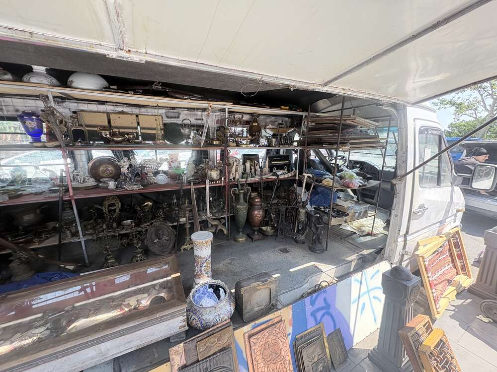
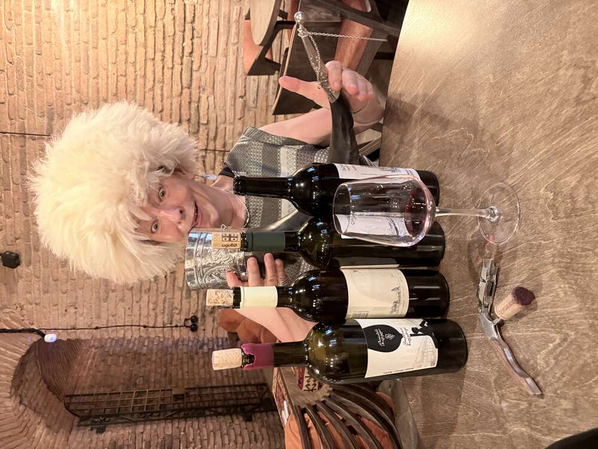

Letzter voller Tag der Reise: Flohmarkt an der Trockenen Brücke, Standseilbahn auf den Mtazminda, Kaffee, Weinprobe und ein letzter gemeinsamer Abend in Tiflis.
Dry Bridge Market: Der bekannteste Flohmarkt von Tiflis, benannt nach einer historischen Brücke über ein längst trockengelegtes Flussbett. Entstanden ist er in den chaotischen 1990er-Jahren, als nach dem Zusammenbruch der Sowjetunion viele Georgier gezwungen waren, Erbstücke, Orden und persönliche Habe zu verkaufen, um zu überleben. Aus dieser Notlage heraus wuchs über die Jahre ein weitläufiger Markt, der heute täglich (außer bei Regen) geöffnet hat – ein Freilichtmuseum aus Sowjet-Nostalgie, Kunsthandwerk und echtem wie vermeintlichem Antiquitätenhandel.

Ein Stand mit gestrickten Socken, Filzmützen und häkelnden Tierfiguren – Handwerk, das neben den Sowjet-Devotionalien den zweiten großen Schwerpunkt des Marktes bildet.

Ein bis unters Dach mit Vasen, Ikonen, Kerzenständern und Kuriositäten vollgepackter Lieferwagen – ein rollendes Antiquitätengeschäft mitten auf dem Markt. Ein Wort zur Vorsicht, das auch unter Georgien-Reisenden kursiert: nicht alles „Sowjetische“ hier ist tatsächlich alt, ein Teil der Ware wird mittlerweile eigens für den Markt nachproduziert.
Mtazminda („Heiliger Berg“): Mit 770 Metern der höchste Punkt von Tiflis, benannt in Anlehnung an den Berg Athos. Seit 1905 führt eine Standseilbahn hinauf – damals ein belgisch-französisch-polnisches Gemeinschaftsprojekt, finanziert von einem belgischen Konsortium, das dafür 45 Jahre Betriebsrecht erhielt. Nach einem schweren Unfall im Jahr 2000, bei dem ein Seil riß und ein Wagen mit japanischen Touristen zurück in die Talstation krachte, war die Bahn 12 Jahre außer Betrieb; seit 2013 fährt sie wieder, mit einer Zwischenstation am Pantheon der georgischen Dichter und Staatsmänner (dort liegt übrigens auch die Mutter Stalins begraben).

Dicht gedrängt in der Standseilbahnkabine während der gut dreiminütigen Fahrt bei 28 bis 33 Grad Steigung – unten breitet sich Tiflis in der Nachmittagssonne aus.

Der 274,5 Meter hohe Fernsehturm von 1972, wegen seiner markanten Silhouette gelegentlich „Eiffelturm von Tiflis“ genannt – seit einem Brand 2004 für Besucher gesperrt, aber nachts aufwendig beleuchtet und von praktisch jedem Punkt der Stadt aus sichtbar.

Ein versteckter Hinterhof mit bunt bemalten Toren, Graffiti und improvisierten Holzbänken – typisch für die informelle Café-Kultur abseits der Altstadt-Touristenpfade.

„Shavi“ (georgisch für „schwarz“) – eine kleine Spezialitätenrösterei, Sinnbild für die junge, international geprägte Cafészene, die sich in den letzten Jahren in Tiflis etabliert hat.

Zum Abschluss noch einmal georgische Trinkkultur in voller Ausstattung: eine weiße Papacha-Fellmütze, mehrere offene Flaschen und ein silbern gefasstes Trinkhorn (Kantsi) – traditionell wird daraus in einem Zug getrunken, da es sich wegen der spitzen Form nicht abstellen lässt, ohne den Inhalt zu verschütten.

Letzte gemeinsame Weinverkostung in einem Fachgeschäft mit Regalen voller georgischer Weine aus allen Anbauregionen – ein passender Ausklang nach acht Tagen zwischen Chatschkaren, Klöstern und Qvevri-Kellern.

Letzter gemeinsamer Abend der Reisegruppe in einer der vielen kleinen, dunkel-gemütlichen Bars in Tiflis – nach acht Tagen Armenien und Georgien ein passender Schlusspunkt.